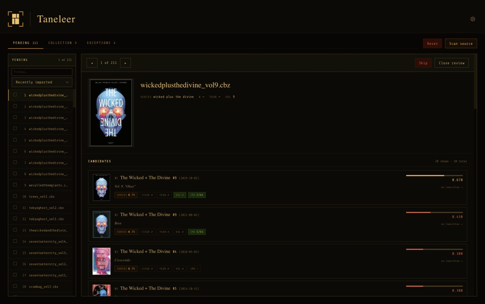

CBZ, CBR and PDF
CBR and PDF are converted to CBZ on entry. No system unrar, no PDF binaries. Existing ComicInfo.xml is preserved.
Comic archive management · macOS
Taneleer converts your comics to CBZ, matches each issue against ComicVine, and files it where Komga expects to find it.
v1.0.0 · signed & notarised · Apple Silicon and Intel · free

What it does
Point Taneleer at the collection you already have. It reads, converts and proposes. You confirm. Nothing is written to your source files, ever.
CBR and PDF are converted to CBZ on entry. No system unrar, no PDF binaries. Existing ComicInfo.xml is preserved.
Candidates are ranked on series, issue, year and a cover fingerprint. The score breakdown is always shown.
Empty fields are filled. Existing values change only where you tick them. Your data is trusted until you say otherwise.
Choose a preset or write your own: {Series}/{Series} #{Number} ({Year}).cbz, with a live preview.
Manual, Assisted or Aggressive, with a tunable threshold. Files with existing metadata are never applied silently.
A scan is triggered on Komga after every confirmation. Optional watch mode rescans the source library for you.
The matching
Every issue is read carefully, ranked in two passes, and verified against its cover. The working is always shown, so a confident match and a lucky one are never confused.
Year, volume and issue number are extracted from any common pattern. trees001 becomes series trees, issue 1. Jammed names such as seventoeternity are word-segmented before ComicVine is asked, so it finds Seven To Eternity.
Series names are compared by token similarity, ignoring case and diacritics, with a second test for joined forms. Issue number must match exactly. Year must fall within one of the cover date.
The ten best candidates have their covers fingerprinted and compared to your file’s cover, by perceptual hash. It raises confidence; it never disqualifies, because variant covers are common and a different cover is not a wrong issue.
Each candidate carries its score and a per-signal breakdown, so you can see precisely why it ranks where it does.
How a score is made
Where the filename is hopeless, you teach Taneleer once. Aliases fold your own naming to a canonical series by prefix or regex. Series hints carry one confirmed match to the siblings in the same run, so a long series costs one search, not twenty.
The same cover fingerprint powers duplicate detection across the collection.
The method
Taneleer walks the source library and converts new files into a pending queue, live.
Each file shows its cover, parsed filename and ranked ComicVine candidates.
See exactly which fields fill and which differ. Confirm, and the next file appears.
The file is written to the output library at its template path. Komga reads it from there.
Safe by construction
Two directories, one pipeline. The source is never modified or deleted from. Taneleer produces its output elsewhere, and the output is always a valid input, so a round trip is safe.
Every file carries one of four statuses. Nothing is called Confirmed without a ComicVine match, and every state change is shown twice: on the item and in the tab counts.
Duplicates are found by cover fingerprint. Jammed filenames such as seventoeternity are folded to their series by alias rules. Re-enrichment of a confirmed file is always a manual act.
Support
Taneleer is free, and made by one person. If it has put your collection in order, a contribution on Ko-fi funds further maintenance. It is entirely optional.
Download
Open the DMG, drag Taneleer into Applications, and begin. First launch walks you through setup.
You will also need a free ComicVine API key. Windows is not available at v1.